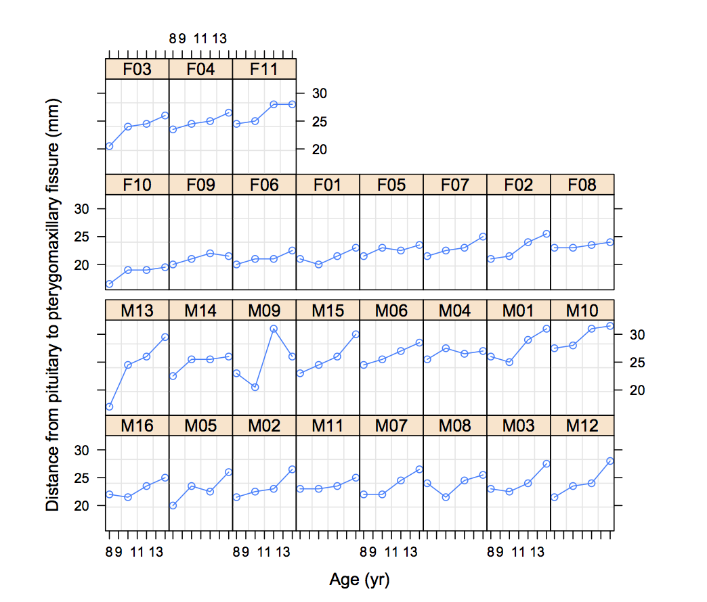
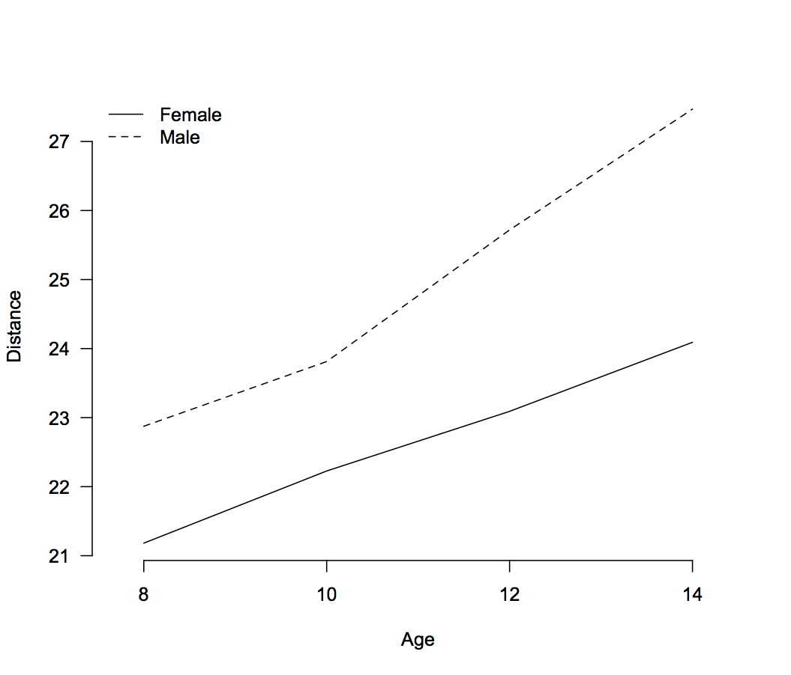

Next: 線形混合効果モデルのあてはめ Up: S-PLUSによる混合効果モデル解析 Previous: 線形混合効果モデルの理論と計算方法
groupedData オブジェクトのクラスにデータを拡張することで，操作が便利になる。
> data01 <- groupedData(response ~ primary | grouping1/grouping2, data=data01, + outer = ~ between, + inner = ~ within, + labels = list(x = "labelx", y = "labely"), + units = list(x = "(cm)", y = "(kg)"))のように指定する。
同じデータについて，ネストされたグループ化変数を
response ~ primary | grouping1/grouping2と指定することもできれば，
response ~ primary | grouping1, inner = ~ grouping2のように指定することもできる。 それが変量因子と考えるか，反復可能な固定因子と考えるかの違い。
データを groupedData クラスにしておくことで，図示が簡単になる。 パッケージ lattice がロードされているとして，
> plot(data01, outer = TRUE, layout = c(6, 2))などとすることで，グループ別，外部因子別のパネルプロット（横軸が primary，縦軸が response）を描くことができる2。
歯列矯正のデータ Orthodont について，Sex 別の distane の年齢 age 変化を図示する。
> plot(Orthodont, layout = c(8,4), between = list(y = c(0, 0.5)), length.out = 2, aspect = 1.5)

関数 interaction.plot() を用いて，交互作用プロットを描くこともできる。
> interaction.plot(Orthodont$age, Orthodont$Sex, Orthodont$distance,
+ xlab = "Age", ylab = "Distance", legend = F, axes = F)
> axis(1, 1:4, c("8", "10", "12", "14"))
> axis(2, las = 1)
> legend("topleft", c("Female", "Male"), lty = 1:2, bty="n")

Taichi Okumura